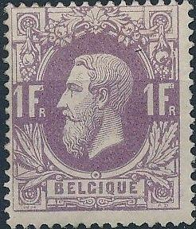
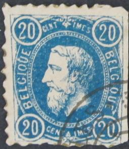
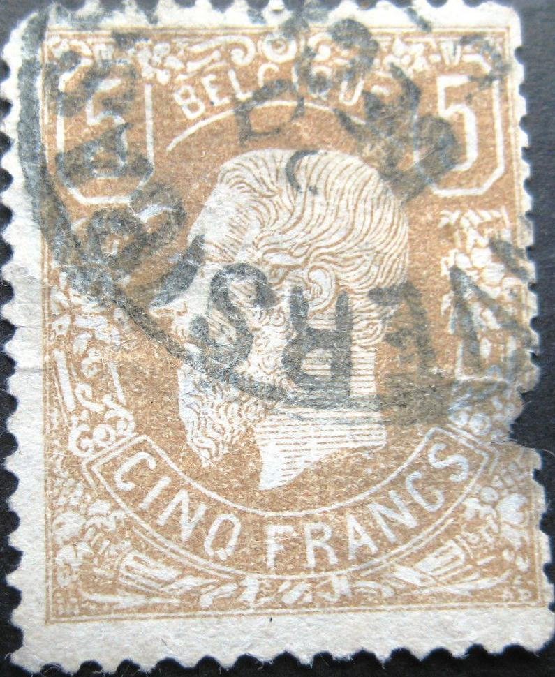
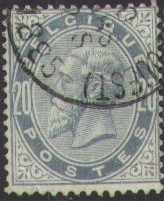

Return To Catalogue - Belgium 1869 5 Francs forgeries, part 1 - Belgium 1869 5 Francs forgeries, part 2 - Belgium 1849-1865, King Leopold - Belgium 1866-1869 Lions - Belgium 1893-1911 - 1912 Arms and King Albert issue - Belgium 1915 onwards
Currency: 100 Centimes = 1 Franc
Note: on my website many of the
pictures can not be seen! They are of course present in the
catalogue;
contact me if you want to purchase it.
For stamps of Belgium 1849-1865, King Leopold or Belgium 1866-1869 Lions, click here.


10 c green 20 c blue 25 c yellow 30 c brown 40 c red 50 c grey 1 F violet 5 F brown (1878, 2 shades of colour)
For the specialist: these stamps are usually perforated 15, but the 10 c and 25 c also exist perforated 14, the 10 c, 25 c and 30 c also seem to exist imperforate (rare).
Value of the stamps |
|||
vc = very common c = common * = not so common ** = uncommon |
*** = very uncommon R = rare RR = very rare RRR = extremely rare |
||
| Value | Unused | Used | Remarks |
| 10 c | *** | vc | |
| 20 c | R | c | |
| 25 c | *** | c | |
| 30 c | RR | ** | |
| 40 c | RR | ** | |
| 50 c | RR | *** | |
| 1 F | RR | *** | |
| 5 F | RRR | RRR | Shades: 1878 yellow brown, 1881 redbrown. |


I've been told that these are essays in green and red of the 5 F
value. I'm not sure if this is true.
Sites with interesting information about forgeries of this issue (especially the 5 F): http://users.skynet.be/philately/1869/1869-faux.html and http://fauxtimbres.skynetblogs.be/. Also the book 'Les Timbres Belges Faux et Truques' by M.G.Slagmeulder.
Forged cancels 'NORD II' and 'ANVERS NORD 1' on 10 c values

Forgery of the 20 c value. Cut from some kind of souvenir sheet?
The 5 F is very rare (30.000 stamps in red-brown colour were
issued and 18.000 in another shade of yellow-brown only). This is
probably the reason that dangerous forgeries of this stamp are
known to exist (at least 17 different, some from improved
plates). Among the forgers that made forgeries of these stamps
are Fournier, Sperati and Venturini. Fourteen of these forgeries
are described in the book of M. Slagmeulder: 'Les Timbres Belges
Faux & Truqués' (104 pages) or 'Les Timbres Faux de
Belgique' (1955, 157 pages).
These stamps were designed by H.Hendrick and the engraving was
done by A.Doms of the stamp factory (Zegelfabriek) in Mechelen.
The initials 'HH' are found in the left bottom corner and the
initials 'AD' in the right bottom corner of the 5 F stamps.
Distinguishing characteristics of the genuine 5 F:
1) There is a very typical delta-shaped ornament in to the left
of the eye of the King. In many forgeries this ornament has a
different shape.
2) On top of the second 'E' of 'BELGIQUE' there should be only
one line (not a V-shaped ornament as in some forgeries).
Click here for Belgium 1869 5 Francs forgeries part 1 or Belgium 1869 5 Francs forgeries, part 2.

Stamp from my personal collection. I think the stamp is genuine,
but the right hand side has been reperforated.



10 c red 20 c blue 25 c blue 50 c violet
Value of the stamps |
|||
vc = very common c = common * = not so common ** = uncommon |
*** = very uncommon R = rare RR = very rare RRR = extremely rare |
||
| Value | Unused | Used | Remarks |
| 10 c | *** | c | |
| 20 c | *** | * | |
| 25 c | R | *** | |
| 50 c | R | *** | |

Forgery of the 25 c, some kind of cut from a souvenir card? The
perforation is done with scissors?

10 c red on blue 20 c olive 25 c blue on red 35 c brown 50 c yellow 1 F brown on green 2 F violet As 35 c type, but with small tab attached (1893)

10 c brown 10 c red 20 c green 25 c blue 35 c brown 50 c brown 50 c grey 1 F red on green 1 F orange 2 F lilac on red 2 F violet
The small attachment with inscription 'NE PAS LIVRER LE DIMANCHE NIET BESTELLEN OP ZONDAG' could be used to prevent the delivery on sunday. With the removement of this attachment the sender of the letter did not object to deliver the letter on sunday. Stamps without tab are worth less. These stamps are all perforated 14.
Value of the stamps |
|||
vc = very common c = common * = not so common ** = uncommon |
*** = very uncommon R = rare RR = very rare RRR = extremely rare |
||
| Value | Unused | Used | Remarks |
Without Tabs |
|||
| 10 c | * | vc | |
| 20 c | *** | c | |
| 25 c | * | vc | |
| 35 c | *** | * | |
| 50 c | ** | * | |
| 1 F | RR | ** | |
| 2 F | *** | *** | |
| With Tabs | |||
| 10 c brown | * | vc | |
| 10 c red | * | vc | |
| 20 c | ** | c | |
| 25 c | ** | c | |
| 35 c | *** | * | |
| 50 c brown | *** | ** | |
| 50 c grey | ** | * | |
| 1 F red on green | *** | *** | |
| 1 F orange | R | *** | |
| 2 F lilac on red | R | *** | |
| 2 F violet | R | ** | |
Mute cancel:
I have seen postal stationery of the type with tab: 10 c red, 10 c brown and 25 c blue on red. The tab could be crossed out with a pen (since it could not be detached as in the stamps). I have seen postal stationery in the design without tab as well: 10 c red and 25 c blue on red.
The Serrane Guide mentions two forgery types of the 2 F, one of which has the impossible cancel "LIEGE 25 JUIN 1892" (the stamps were only issued in 1893).


{kind=link}
{kind=link}
{kind=link}
{kind=link}
{kind=link}
{kind=link}